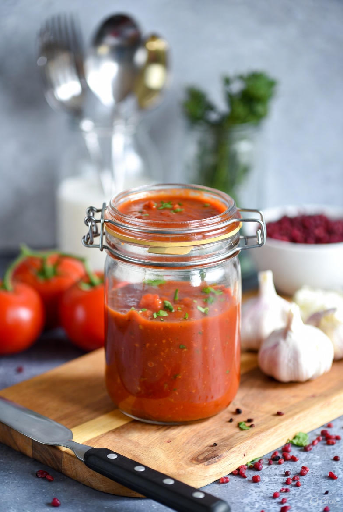

Homemade Pizza Sauce

Homemade Pizza Sauce
Ingredients
- 1 can crushed tomatoes
- 2 tablespoons tomato paste
- 1 tablespoon minced garlic
- 1 tablespoon dried basil
- 1 tablespoon dried oregano
Making the Sauce
- Combine ingredients in a sauce pan
- Simmer for 10-15 minutes
- Allow to cool and put ina sealable container
Odin Recipes